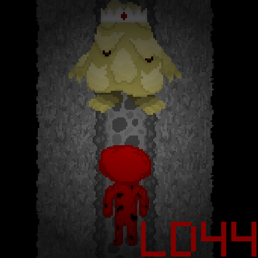
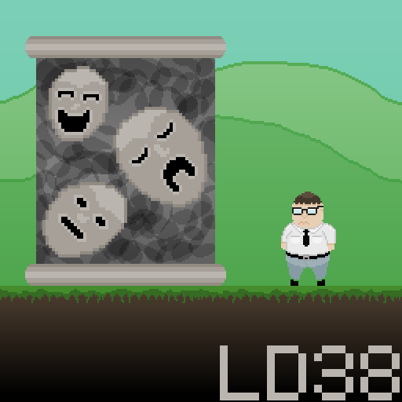

|
Liftman is a surreal point-and-click adventure about a college student just trying to get to class who gets mistaken for the new multidimensional elevator operator! Figure out where your guests need to go in a timely fashion, or you might not make it out alive... either way you'll probably still be late for biology! |
 |
Having accidentally teleported into a strange dimension, Aniyah and GC-46 find themselves trapped in a labyrinth of wires and monsters. Their only hope is an AI that controls the facility. The AI, named G_MA, offers to help if Aniyah and GC-46 can restore power. Aniyah and GC-46 must find these nodes quickly as G_MA can only keep the lights on for so long on her dwindling power. Escape the facility and return to your mission! |
|  | Play as a young meat-thing and conquer Meat Mountain from The Fat King. Blood is your health in this game, and in order to proceed you must sacrifice your blood to enter gates. Will you defeat The Fat King and become ruler of the land? Or merely become minced meat? |
 |
A sole wanderer travels across the barren wastes. Her carrier spits and sputters, running on fumes, begging for a break. Suddenly, the grand machine's gears grind to a halt, and the once magnificent and proud creature becomes a target. At night, the natives take notice, and begin their swarming for the feast. You must defend your transport and also repair it, or face your doom as another bleached skeleton in the dunes. |
|  | You play as Carl Morrison, a man running from his fears in a time where society has little patience for cowardliness. You decide to seek a solution, and wind up in an experimental procedure that visually constructs your greatest weaknesses. Will you overcome your primal reaction to run, or will you conquer your own mind. |
 |
You play as a young boy who can't sleep because of the monsters that plague him in the night. Face your fears and fight these monsters, will you make it to the king of fear itself? Or will you succumb to the swarms of creatures haunting you? (There is a conclusion) |
 |
Strive to become the greatest trader in ancient Mesopotamia! Use your knowledge of the land to maximize your profits! Avoid bandits and protect your precious cargo in the harsh desert! Will you make it to the grand city of Babylon? Or will you perish in the swirling sands? |